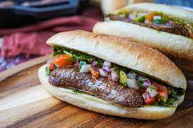

Choripan

Description
Choripán is a classic Argentine street food, consisting of a grilled chorizo sausage served in crusty bread and often topped with chimichurri sauce.
Ingredients
- 4 chorizo sausages
- 4 baguette-style rolls
- Chimichurri sauce to taste
Steps
- Grill the chorizo sausages until cooked through.
- Slightly toast the rolls on the grill.
- Place the sausages in the rolls and top with chimichurri sauce.
- Serve hot.